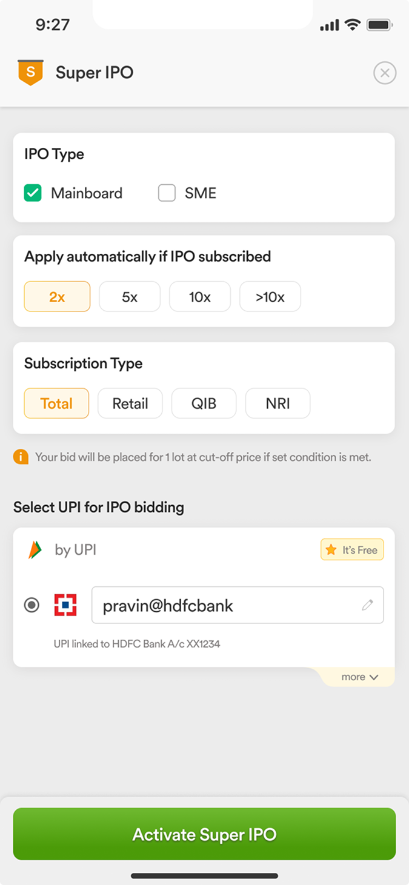
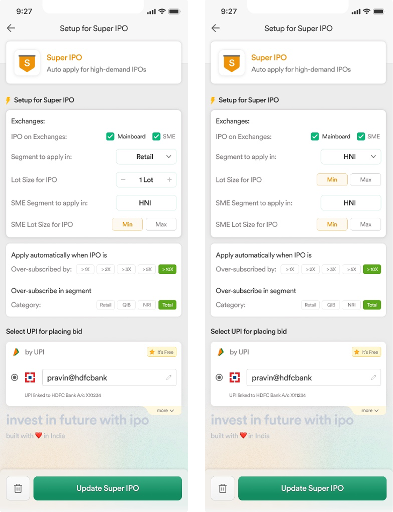
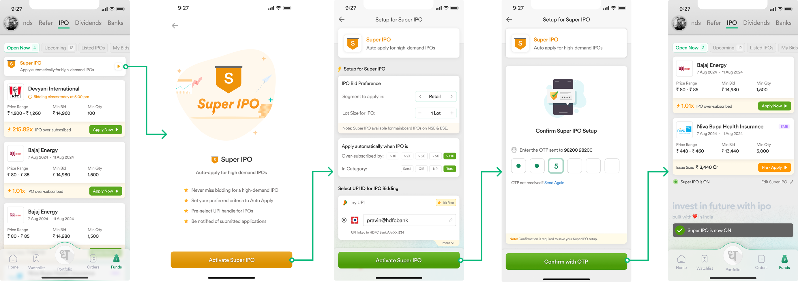
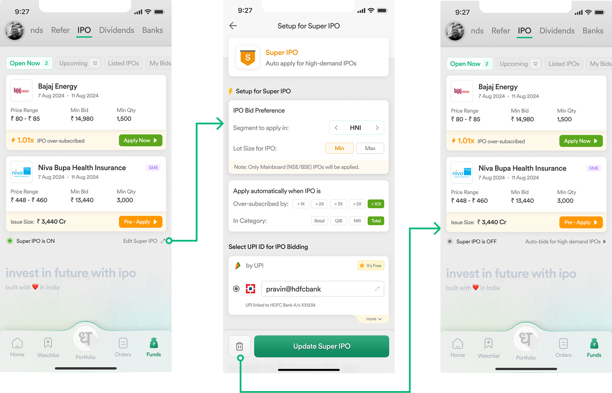
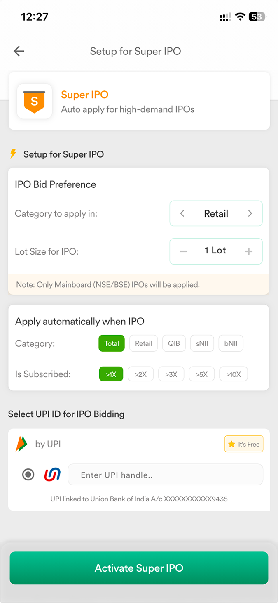
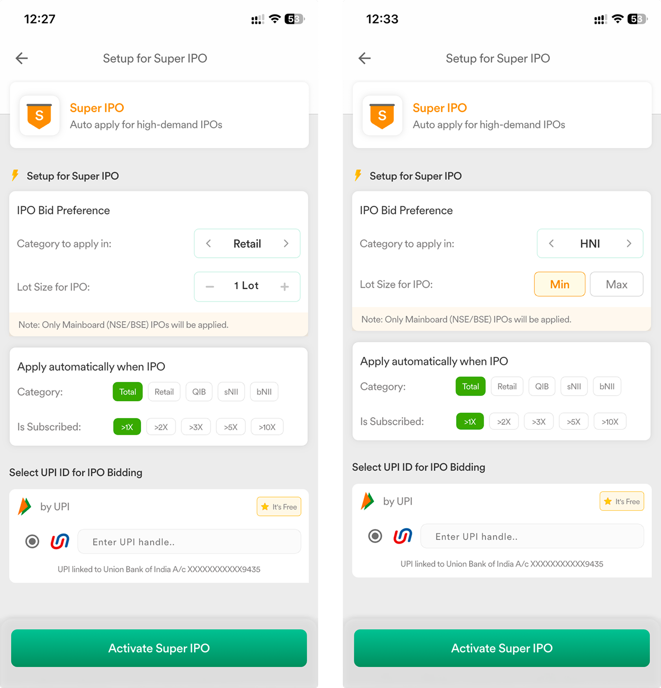
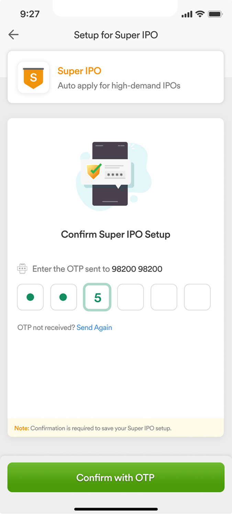
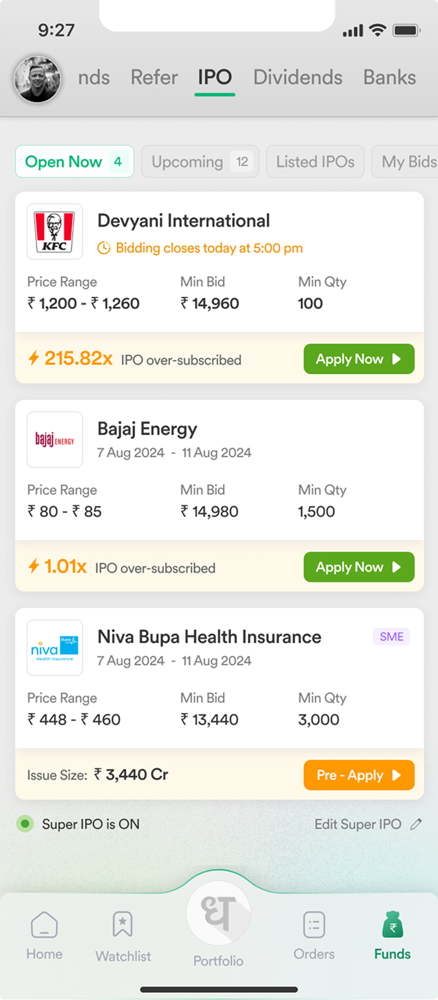
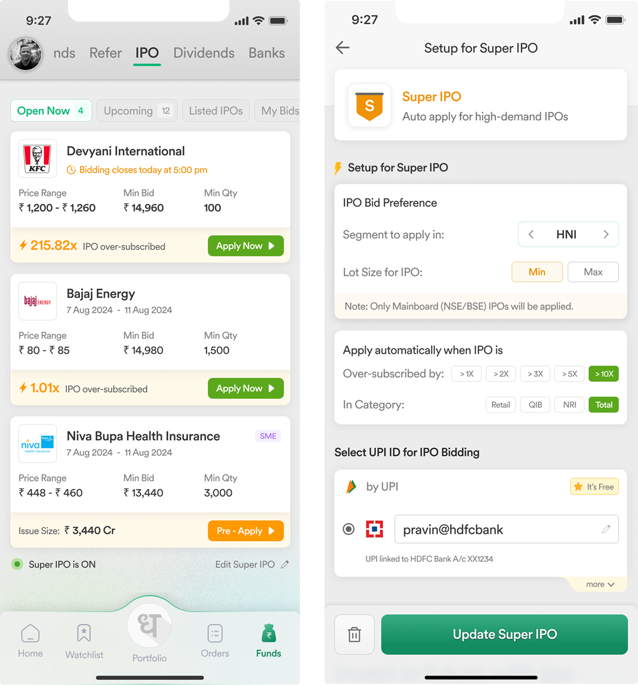

Team
|
CEO - Dhan |
1 - Product Manager |
|
1 - Product Designer (Myself) |
2 - Engineers |
What’s Dhan?
Dhan is a technology-led stock trading and investing platform built for India’s active market participants. It solves the problem of slow, outdated brokerage interfaces by offering lightning-fast execution and deep integration with tools like TradingView.
The platform serves two distinct user personas:
Super Traders - Who need speed, advanced charts & F&O capabilities.
Long-Term Investors - Who focus on wealth creation through SIPs & IPOs.
What’s the problem statement?
Market participants often treat IPOs as a momentum game. Instead of analyzing fundamentals, they rely on "Social Proof" monitoring the Live Subscription Status (e.g., "QIBs subscribed 50x") to gauge if an IPO is worth the risk.
This creates a high-friction loop where users constantly refresh the app to see if the "crowd" has arrived yet.
Why does this problem exist?
The problem exists because of a mismatch between Market Speed and User Attention.
IPO demand changes every minute. A "boring" IPO at 10 AM can become a "hot" IPO by 2 PM if a large institution places a bid.
Users have jobs/lives. They cannot refresh the Dhan app every 15 minutes to check if the subscription crossed 10x.
This gap creates Anxiety. Users judge the IPO's value by its current popularity, but they physically miss the moment that popularity spikes.
How does Dhan know this is a problem?
We observed two distinct signals:
We knew that market participation spikes disproportionately in the final hours of an IPO. This delay proves that users aren't waiting for funds; they are waiting for validation.
In India, market participants use Subscription Status (e.g., "QIB subscribed 50x") as a proxy for quality. They don't read the balance sheet; they read the crowd. If the crowd isn't there yet, they don't bid.
Why should Dhan solve for it?
For the User (FOMO Relief) - It moves them from "Anxious Tracking" to "Strategic Intent." They can say, I only want this if it's hot, and then go back to work.
For Dhan (Competitive Moat) - Dhan positions itself as a "Tech-First" platform for Super Traders and Long term Investors. Competitors (like Zerodha or Groww) require manual bidding. By automating this, Dhan captures the high-intent volume that might otherwise be lost if a user forgets to check the app.
Non-negotiable rules
Cognitive Offloading - The user shouldn't have to calculate what "500% subscription" means. We use simple multipliers (2x, 5x) and presets to replace math with "sentiment choices."
Trust Through Friction - Automating money is scary. We must introduce intentional friction (like OTPs or Review screens) so the user never feels like the app is "spending money behind their back."
Scalable Simplicity - The interface must be dead simple for a first-time investor (Retail @ Cut-Off) but powerful enough for a whale (HNI @ Specific Lot Sizes) without cluttering the screen for the beginner.
Defining Core Experience
Oversimplified Approach

✅ Pros (Why we tried it)
Low Cognitive Load - The interface is clean. It uses simple chips for triggers (2x, 5x) and checkboxes for IPO Type.
Scannability - A user can look at this and understand the logic in 2 seconds.
❌ Cons (Why we failed)
Broken SME Logic - SME IPOs require large bids (₹1L+) and often force the HNI category. This interface failed to accommodate those rules, creating dead ends for users.
Excluded "Super Traders" - By locking the system to "1 Lot," we alienated our most valuable users who want to buy in bulk (10+ lots).
The "Impossible" Promise - Placing Mainboard and SME checkboxes side-by-side implied users could apply for both with a single rule. This is technically impossible, as they require completely different execution parameters.
All-In-One Approach

✅ Pros (Why we tried it)
Total Freedom - It technically allowed every possible combination. Users could apply as "Retail" for Mainboard and "HNI" for SME in one go.
No Hidden Rules - Every setting was visible, so users knew exactly what they were signing up for.
❌ Cons (Why we failed)
Too Complicated - The screen looked like a tax form. Asking users to make 4–5 complex decisions at once (Lot Size, Segment, Category) was overwhelming.
Unnecessary Effort - It felt like we were forcing them to plan a strategy for both Mainboard and SME created mental fatigue.
Lost Focus - The screen was so cluttered with dropdowns that the most important part Setting the Trigger (>5x) got buried.
FTUX for setting up Super IPO

Disable/Edit Super IPO

One-Tap Triggers

We introduced a "Chip-based" interaction model.
Users simply tap >2x, >5x, or >10x.
Why it works - It turns a complex calculation into a simple "confidence choice." You don't need to know the math; you just need to decide if you want to be "Safe" (2x) or "Aggressive" (10x).
Smart Default - The system automatically selects "Total Subscription," so a beginner can set a SuperIPO in just one tap.
V1 launched with Mainboard Only to prioritize simplicity.
Pro Controls

For the "Super Trader” -
Users can change the tracking source from "Total" to "QIB" (Institutional). This lets them ignore the crowd and only buy when the big banks are buying.
We added a toggle for HNI (High Net-worth). This unlocks "Lot Size" controls, allowing users to place large bids (₹2 Lakhs+) automatically, something no other app offers.
Positive Friction

Automation is scary. Users worry, "Did I just accidentally spend money?"
We added a mandatory OTP Verification step before the bot activates.
Why it works - It acts as a safety lock. It forces the user to pause and explicitly say, "Yes, I authorize this." This builds trust.
Clear Status

Once the SuperIPO is set, the user needs to know the system is working.
We placed the "Super IPO is ON" status bar at the very bottom of the screen, below the list.
Why it works - This respects the Visual Hierarchy. The user's primary goal is to browse Open IPOs, not check settings. By pinning the status to the bottom, we keep the main view clean while maintaining "System Visibility" for peace of mind.
Flexible Control

Market sentiment changes quickly. A user might start aggressive (>2x) but decide later to play it safe (>10x). If they feel "locked in," they won't use the feature.
We enabled Full Editability of the active SuperIPO. The user can tap "Edit," change their trigger or lot size, and hit "Update Super IPO."
Why it works - Users are more likely to set a SuperIPO early in the day if they know they can refine (or disable) it later before the trigger fires.
Early Performance Signals
Data observed after Launch -
We observed a 2x spike in feature discovery during the "Day 3" rush hours, validating that users were actively looking for automation tools.
Within the first month, a significant percentage of our "Super Trader" cohort (#Madefortrade - our most active user base) adopted the feature, exceeding our initial beta targets
As this is a brand-new behaviour for Indian investors & traders, we are currently gathering feedback to refine the feature.
What I Learned
Designing for Trust - When automating money, clarity trumps simplicity. Adding the "OTP Step" felt like adding friction, but it made users feel safe.
Psychology of "The Herd" - I learned that retail investors don't always want "data"; they want "validation." Designing the "QIB vs. Total" toggle taught me how to serve both emotional investors (Total) and analytical traders (QIB) in one interface.